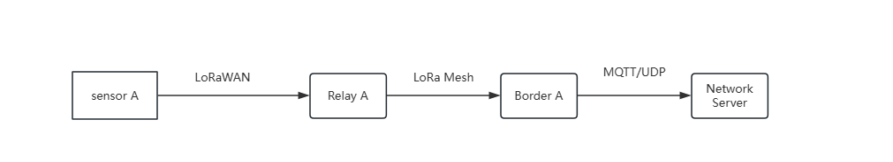
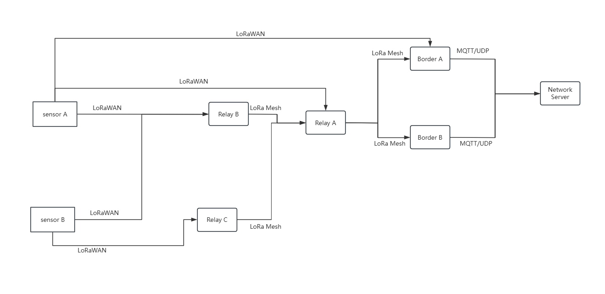

ChirpStack LoRa Mesh User Guide ( new )
1. Function Introduction
LoRa Mesh establishes wireless relay links between gateways, extending LoRaWAN coverage to areas that a single gateway cannot reach.
Relay (Relay Gateway): Receives data from terminal devices and forwards it to the Border via LoRa wireless relay
Border (Border Gateway): Receives relay data and forwards it to the Network Server (NS)
Border supports two forwarding protocols:
ChirpStack MQTT：integrated with ChirpStack v4 NS
Semtech UDP: Docking with TTN, built-in NS or any Semtech-compatible platform (just fill in the local address of the gateway to forward data to the built-in NS)
Basic topology (1 Border + 1 Relay)
 |
Complex topology (multi-device cross coverage + multi-hop + multi-Border)

In actual deployment, data from end devices may be received by multiple Relays and Borders simultaneously (a characteristic of LoRa broadcasting). Each gateway that receives the data will forward it independently, and the NS automatically deduplicates based on the content of the data packets.
Border Direct Connection Mode: By default, the Border processes both Mesh relay frames and direct-connected sensor frames simultaneously. You can enable the Ignore Direct Uplinks option, at which point the Border will ignore sensor data within the direct connection range and only forward frames relayed via Relay.
Uplink De-duplication and Downlink Routing
Uplink deduplication: Data from terminal devices may be received by multiple Relays and Borders simultaneously. Each gateway forwards the data independently, but the NS automatically deduplicates based on the packet content, so the data is ultimately processed only once.
Downlink Route: The NS selects only one Border to transmit downlink data (usually the one with the optimal signal). The context in the downlink frame points to the first-hop Relay, which is the Relay that directly receives the LoRa frame from the sensor. The Mesh downlink frame is forwarded hop by hop through intermediate Relays, and finally reaches the first-hop Relay, which then sends it directly to the end device via LoRa. Other Borders do not participate in this downlink transmission.
2. Precondition
| Conditions | Border | Relay |
| Network Connectivity | Can access NS (wired or cellular network is acceptable, no requirement for external network) | No internet connection required |
| frequency band | Same as Relay | Same as Border |
| Frequency Band of Terminal Device | Same as the gateway | Same as the gateway |
All Mesh gateways (Border + Relay) must operate on the same frequency band (e. g., all 868 MHz or all 915 MHz)
The frequency band of the terminal device must also match that of the gateway
After Mesh is installed, the data forwarding path will change: the Mesh forwarder acts as an intermediate layer between pkt_fwd and NS (pkt_fwd continues to run). Modifying the packet forwarding frequency at the front end of the gateway will not affect Mesh operation, and the original path will be restored automatically after uninstallation.
3. Installation
After logging in to the gateway via SSH, execute the following commands:
Deployment by restricted admin (non-root) users
The default installation script requires root privileges. If the gateway only provides a restricted admin SSH account (with command allowlist, and script execution, Retargeting and piping are prohibited), manual deployment can be performed as follows (actually verified on EG71). The restricted admin belongs to the root group and can directly modify the /etc/lora-gateway-bridge configuration; the docker mount reads the source file via the root daemon, and the Web UI password synchronization also takes effect normally.
1. {"role":"relay","signing-key":"00112233445566778899aabbccddeeff","mesh-freqs":"868100000,868300000,868500000"} 5. |
Note: A restricted admin cannot restart the bridge service directly, and the reboot in Step 5 is a necessary step for the configuration to take effect. Post-deployment role switching (Border/Relay) and parameter adjustment can be completed via the Web UI without root privileges. If the gateway has already deployed Mesh in root mode, subsequent maintenance (role modification/parameter adjustment) can be done using docker exec or the Web UI.
4. Log in to the management interface
| method | Address |
| HTTP | http://<Gateway IP>: 8088 |
Log in using the gateway management account (same as the gateway's built-in Web management page): Username admin, and the password is the gateway management password.
The interface consists of three tabs: Logs (real-time operation logs), Config (configuration), and Status (running status of each service). The top of the page displays the current role (Border/Relay), Gateway EUI and system status.
5. Configuration
5.1 Role Settings
Config > Mesh Configuration > Role
| Role | Description |
| Relay | Relay forwarding gateway, which forwards sensor data to the Border via LoRa Mesh |
| Border | Border gateway, which receives relay data and forwards it to the NS |
After switching roles, the change takes effect immediately without the need for a restart.
5.2 Mesh Parameters
| parameter | Description | Suggestions |
| Signing Key | Communication Key (32-bit Hexadecimal) | All Mesh gateways must be identical |
| Mesh Frequencies | Relay frequencies (Hz, comma-separated) | All Mesh gateways must be identical (auto-populated during installation) |
| Max Hop Count | Maximum number of relay hops | 1 (increase as needed) |
| TX Power | Relay transmit power (dBm) | 27 (statutory maximum) |
| Spreading Factor | Relay Modulation Parameters | SF7 (can be increased if the distance is long) |
| Ignore Direct Uplinks（仅 Border） | Ignore frames from directly connected sensors and only forward Mesh relay frames | Disabled by default |
The Signing Key and Mesh Frequencies must be consistent across all Mesh gateways. This parameter is irrelevant to end devices (sensors).
Ignore Direct Uplinks: When enabled, the Border will no longer process sensor data within its direct connection range, and only forward frames relayed via Relay. When disabled by default, the Border processes both direct connection frames and Mesh relayed frames simultaneously.
5.3 Forwarding Protocol Configuration (Displayed only for the Border role)
ChirpStack MQTT（对接 ChirpStack v4）
| parameter | Description | Example |
| MQTT Server | MQTT broker address of NS | tcp://192.168.1.100:1883 |
| Topic Prefix | Region Prefix | eu868 |
| Username / Password | MQTT Authentication (if applicable) | - |
The MQTT port depends on the NS deployment configuration, with common values being 1883 or 1884; please refer to the actual NS environment for the exact setting. Note: If interfacing with a gateway with a built-in NS, use the Semtech UDP protocol instead of MQTT (the MQTT version of the built-in NS is incompatible with the Mesh component).
| parameter | Description | Example |
| UDP Server | IP address of NS | 192.168.1.100 |
| UDP Port | Port Number | 1700 |
Semtech UDP (TTN connection / built-in NS / others)
Connect to the built-in NS: The installation script will automatically configure it. If you need to set it manually, fill in the LAN IP of the gateway itself for Server, and fill in 1700 for Port.
Config > Forwarding Protocol
5.4 Regarding the Original Functions of the Gateway
After LoRa Mesh is installed, the original packet forwarder (lora_pkt_fwd) of the gateway continues to run. The Mesh forwarder acts as an intermediate layer: it receives sensor data from pkt_fwd, the Relay encapsulates the data into a Mesh frame and forwards it via LoRa wireless relay, and the Border decapsulates the received data and forwards it to the NS through gateway-bridge. After the Mesh is uninstalled, the data path reverts to the direct forwarding from pkt_fwd to NS.
6. Connectivity Verification
6.1 Check Service Status
Status page displays the running status of each service:
| Service | Description | Normal state |
| mesh-forwarder | Mesh protocol stack (Node. js) | RUNNING |
| web-ui | Web Management Interface (Flask) | RUNNING |
| mqtt-forwarder | ChirpStack MQTT Forwarder | Border+MQTT: RUNNING / 其他: STOPPED |
| semtech-udp-forwarder | Semtech UDP Forwarding | Border+UDP: RUNNING / 其他: STOPPED |
MQTT forwarding and UDP forwarding are mutually exclusive, and only one of them can be running at the same time. Both are in the STOPPED state in Relay mode.
6.2 View Logs
Logs page to observe key logs:
The following should be visible on the Relay side:
| Plain Text [2026-08-03 01:23:07] UNWRAP relay=fefe4662 uid=2855 dev=0767ec58 hop=1 SF7BW125 freq=904.1MHz rssi=-98 snr=1 34B → bridge |
Border side shall see:
| Plain Text Proxying LoRaWAN uplink, uplink: [uplink_id: 3230820292, freq: 902900000, rssi: -89, snr: 10.75, mod: [LORA - sf: 7, bw: 125000]] Sending event |
Log Keywords: TX mesh (Relay relay transmission), UNWRAP (Border decapsulation and forwarding to NS), RX direct (Border direct-connected sensor), Stats (60-second statistical summary)
6.3 End-to-End Verification
Relay receives sensor data → Logs: TX mesh uid= N dev= xxx freq= xxxMHz
Border received Relay frame→ Logs: UNWRAP relay=xxx uid=N dev=xxx → bridge
Border forwards to NS → gateway-bridge receives the data
NS receives data → NS management interface displays the device online
NS receives data > NS management interface: Device online
7. Register the Border Gateway in NS
7.1 Obtain Gateway EUI
The Gateway EUI is displayed at the top of the Web UI page. It can also be viewed via SSH:
| FoxPro docker exec chirpstack-mesh cat /opt/chirpstack/gateway_eui.txt |
The Gateway EUI is displayed at the top of the Web UI page. It can also be viewed via SSH:
Log in to the ChirpStack v4 management interface
Go to Gateways > Add gateway
In the Gateway ID (EUI64) field, enter the EUI
Enter the gateway name and select the Gateway Profile
Wait for go-live after saving (the first heartbeat will occur within approximately 5 minutes)
7.3 Confirm Go-live
Gateway list displays Online
Click Gateway > Frames to view the data frames
8. Uninstallation
Restricted admin users cannot use the pipe character (the | sh in the one-click uninstall command will be blocked), please execute the following commands line by line:
| Plain Text docker rm -f chirpstack-mesh reboot |
After execution, the original LoRaWAN packet forwarding function of the gateway will be automatically restored without any additional operations.
9. Deployment Recommendations
9.1 Mesh Link Parameter Tuning
It is recommended to directly set the TX Power to the maximum value compliant with local regulations, and there is no need to adjust it according to the distance. The distance is controlled by SF:
| Scenario | Spreading Factor | TX Power | Applicable Distance (Open Environment) |
| Short distance (< 1km) | SF7 | Regulatory Maximum | High speed, low latency, maximum capacity |
| Medium distance (1-3km) | SF8 | Regulatory Maximum | Balance speed and coverage |
| Long distance (3-8km) | SF9 | Regulatory Maximum | Maximum coverage, with a significant reduction in capacity |
| Extreme Distance (8km+) | SF10-SF12 | Regulatory Maximum | Not recommended (extremely low capacity) |
It is not recommended to use SF10 or higher. The larger the SF, the longer the channel time occupied per frame (SF10 is about 6 times that of SF7), which leads to a sharp decrease in the number of accessible terminal devices. If SF9 still cannot meet the link quality requirements, priority should be given to adding Relay nodes to shorten the communication distance instead of increasing the SF.
9.2 Hop Count and Capacity
Each additional hop will cause the relay frame to occupy extra channel time. The following is the estimation under the conditions of BW 125kHz, 20-byte payload, and 15-minute reporting interval (1% duty cycle for EU868):
| SF | Air time per frame | Recommended RX2 Delay per Hop | Number of terminals accessible in 1 hop | 2 jumps | 3 hops |
| SF7 | ~62 ms | 3 seconds | ~145 | ~70 | ~48 |
| SF8 | ~113 ms | 4 seconds | ~80 | ~40 | ~27 |
| SF9 | ~206 ms | 5 seconds | ~44 | ~22 | ~15 |
| SF10 | ~371 ms | 6 seconds | ~24 | ~12 | ~8 |
| SF11 | ~679 ms | 7 seconds | ~13 | ~7 | ~4 |
| SF12 | ~1228 ms | 8 seconds | ~7 | ~4 | ~2 |
The number of terminals refers to the total number of terminal devices connected to the same set of Mesh gateways
In multi-hop scenarios, the Relay needs to relay both sensor frames and Mesh frames from the previous hop simultaneously, and the capacity decreases progressively with the number of hops.
SF10+ has extremely low capacity and is not recommended for multi-hop scenarios
Using multiple channels enables linear capacity scaling (e. g., 8 channels deliver roughly 8x the capacity of a single channel)
9.3 Disable ADR
It is recommended to disable ADR (Adaptive Data Rate) on the terminal device.
Reason: The Received Signal Strength Indicator (RSSI) that the NS receives via the Border is the signal of the Mesh relay link (Relay > Border), rather than the original signal from the end device to the gateway. Making ADR decisions based on the RSSI of the Mesh link will lead to incorrect power/rate adjustments.
Alternative solution: Manually set a fixed Data Rate and TX Power for the terminal device to ensure the link quality between the sensor and the nearest Relay.
9.4 RX2 Delay Configuration
Mesh relays introduce additional latency (approximately 200-500ms of processing time per hop plus transmission time). If the RX2 Delay is too small, the device will have already closed its receive window by the time the downlink frame arrives at the relay.
| hop count | Recommended RX2 Delay | Cause |
| 1 hop | 3 seconds | 1s margin + 1s processing + 1s buffer |
| 2 jumps | 5 seconds | Two-hop relay processing + buffering |
| 3 hops | 7 seconds | 3-hop relay processing + buffering |
Adjustment method: In ChirpStack v4 NS, set the RX2 data rate and RX delay via the device's MAC Commands settings, or send the RxParamSetupReq MAC command via the Downlink Queue.
It is recommended to schedule the downlink in the RX2 window (RX2 naturally opens later than RX1, leaving more time for Mesh multi-hop transmission). RX2 can be remotely adjusted via the RxParamSetupReq MAC command without modifying the device firmware.
10. Frequently Asked Questions
Is there a communication failure between Relay and Border?
Ensure that the Signing Keys of all Mesh gateways are completely identical
Ensure that the Mesh Frequencies of all Mesh gateways are completely consistent
Make sure all Mesh gateways have the same hardware frequency band (either all 868 or all 915)
Make sure it is within the radio frequency coverage (SF7 covers approximately 1-2 km in open environments)
Sensor data not received by NS?
The Border log shows UNWRAP relay= xxx. .. → bridge → the relay data has been received and forwarded
gateway-bridge process is running normally → Data has been delivered to NS
If UNWRAP logs are missing → check whether the Relay has TX mesh logs and whether the Mesh Frequencies at both ends are consistent
Will multiple Relays receive duplicate data from the same sensor?
No. NS automatically deduplicates based on the packet content (PHYPayload), so multiple Relays/Border Routers forwarding the same frame will only be processed once.
How to select the path for downlink?
The NS selects only one Border to transmit downlink data (typically the one with the optimal uplink signal). The context in the downlink frame points to the first-hop Relay (the Relay that directly receives the sensor LoRa frame) rather than the last-hop Relay. Intermediate Relays only forward mesh frames (increment the hop count and rebroadcast) without unpacking them. After receiving the frame, the first-hop Relay matches the relay_id, unpacks the frame, and directly transmits it to the end device via LoRa. Other Borders do not participate in this downlink transmission.
Class-C device downlink failure?
Mesh relays do not support Class-C immediate downlink (minimum latency: 1 second). Recommendation: Class-C devices should connect directly to the Border gateway, or switch to Class-A mode instead.
Will the original functions of the gateway be affected after installation?
During Mesh operation, pkt_fwd continues to run, but the data path changes: the Mesh forwarder acts as an intermediate layer between pkt_fwd and the NS. Modifying the packet forwarding frequency at the gateway front end does not affect Mesh operation, and the original path will be automatically restored after offloading.